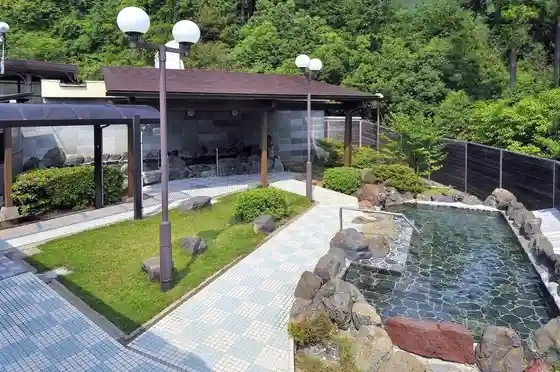
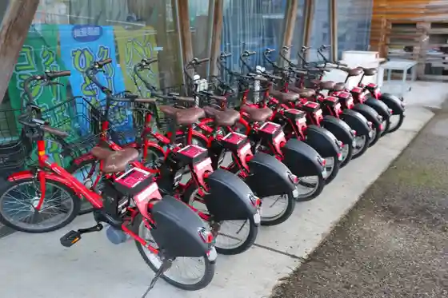

Japan / Gifu / Ikedacho
Ikedacho · Gifu
Ikedacho
Highlighted on the Gifu map.
Ikedacho Town Hall
Ikedacho Yama
Ikedacho, Gifu · Official / source link
Ikedacho Onsen
Ikedacho, Gifu · 0585-45-1126 · Official / source link

Roadside Station Ikedacho Onsen
Ikedacho, Gifu · 0585-45-0037 · Official / source link

Kasumi Kangakei
Ikedacho, Gifu · 0585-45-3111 · Official / source link
Otsu Tani Koen Campground
Ikedacho, Gifu · 058-214-8337 · Official / source link
Yuge Tera no Ajisai
Ikedacho, Gifu · 0585-45-3732 · Official / source link
Otsu Taniume Sono
Ikedacho Tsuneoki Motosuke Fushi no Haka
Nearby in Gifu: ← Ibigawa · Kaizu →
Other towns: Anpachi · Ena · Gero · Gifu · Ginan · Godo · Gujo · Hashima · Hichiso · Hida · Higashishirakawa · Ibigawa · Kaizu · Kakamigahara · Kani · Kasamatsu · Kawabe · Kitagata · Mino · Minokamo · Mitake · Mizuho · Mizunami · Motosu · Nakatsugawa · Ogaki · Onocho · Sakahogi · Seki · Sekigahara · Shirakawa · Shirakawamura · Tajimi · Takayama · Tarui · Toki · Tomika · Wanouchi · Yamagata · Yaotsu · Yoro
All towns in Gifu · Back to all prefectures